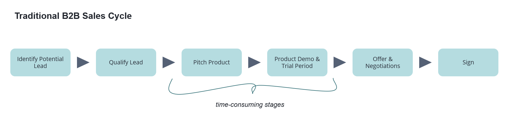
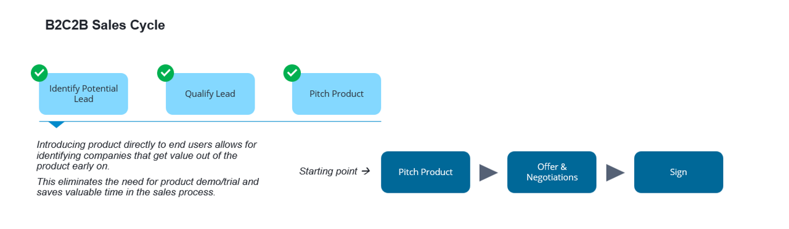

Over the past few years, there has a been a tide of business productivity start-ups. These start-ups range from providing CRM solutions to managing your projects or even to a point where they are now managing your company’s calendar. While these are all great solutions, the biggest challenge has been B2B sales!
Selling in B2B is very different than in B2C and this is not a “new knowledge”. For starters, many a time your end-user is different than a decision maker. It is always difficult to justify productivity gains against price. Marketers are not 100% sure about the target audience, and more than that companies are now cognizant about their data. All these lead to a longer sales cycle which then leads to higher costs of acquisition. This can be detrimental to the business if you are operating in a highly competitive space with not-so-high margins.
The new age start-ups seem to have taken note of the challenges associated with B2B sales and now approaching selling to business via customers — thus giving rise to a new strategy B2C2B.
So, what does B2C2B enable?
To answer that, let’s first look at a traditional sales cycle.

The traditional B2B sales cycle is quite linear and is something that you’d already know! Out of all the stages pitching the product and trialing are usually the most time-consuming events. Depending on the complexity of the product, the trial period could be anywhere between one to three months. And even to reach these stages there is a considerable amount of pre-sales effort involved. B2C2B changes this.

B2C2B focuses on making sure that the end user first finds the solution useful. Once that is established, the sales can go in and discuss the offer. Since the value proposition is already established, discussing an offer becomes easier and quicker. This saves valuable time for the sales team and more importantly improves sales conversion.
While saving time for the sales team is a good advantage, the bigger advantage of B2C2B is the penetration among your end-users. By allowing the users to access your platform without any entry barriers you are increasing awareness about your product. With the right analytics, you can also learn from their behavior and make changes to the platform to improve the overall user experience.
Having said that, one needs to be careful with the level of access the end user gets upfront. The idea is to provide access to enough features that allow them to do their day-to-day job and see the value in the product, but then provide enough reasons that would allow them to do more with the platform and adopt an enterprise-wide solution.
Some of my favorite products that have adopted the B2C2B model really well are Notion.so and Miro.com, and I am seeing more and more new-age technology companies adopting this model. Being able to gain the trust of your end-users first and having them by your side while making the business offer, I guess it is the best position to be in!